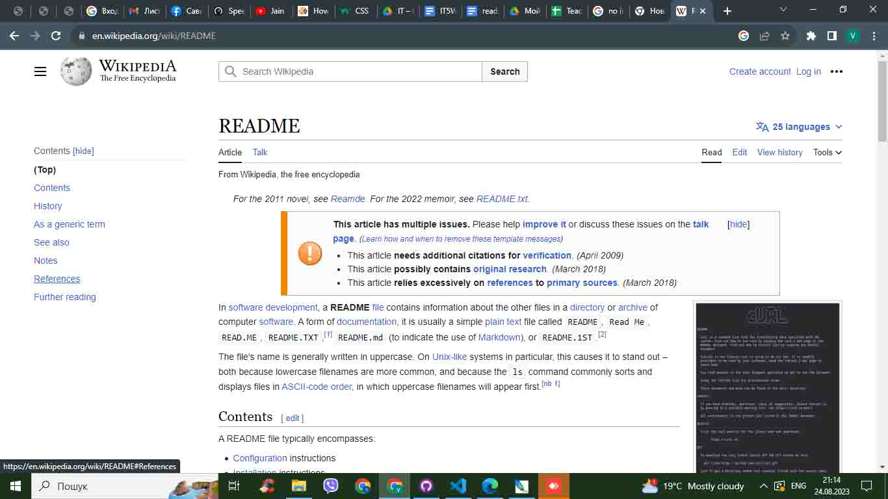

readme not Redmi
Англійська версія Wikipedia стаття readme

README файл - це текстовий файл, який додається до програмного забезпечення і містить інформацію про нього12. README файл може включати опис проекту, інструкції, версії, авторів і т.д.13. README файл можна відкрити в будь-якому текстовому редакторі1.
Якщо я правильно зрозумів, ви хочете конвертувати цей текст у html-файл для сайту skooltimez/IT/readme. Я спробую зробити це за допомогою тегів html. Ось результат: